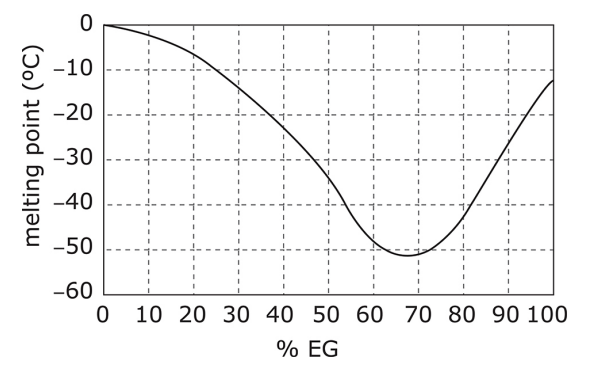

If you cut a horizontal cross section through the trunk of a tree, you can see the tree’s growth rings (also known as tree rings). Each ring inside the trunk of a tree represents the annual growth of the tree. There are two parts of a growth ring. The inner part is formed during the early growth season (spring and early summer in North America) and is relatively less dense. The outer part of each ring is denser and is formed during the late summer and autumn. The growing conditions of a particular year will affect the size of a ring. In ideal growing conditions (such as adequate moisture and a relatively long growing season), a ring may be larger because the tree was able to grow more during that time. However, a cold summer or a drought can cause the ring size to be smaller than normal. Researchers can use tree rings to learn about the growing conditions that were present during a particular time period.
The following graph compares tree ring size to the average amount of monthly rainfall.
The following diagram shows a foodweb.
The human body maintains equilibrium through the use of multiple bodily systems. For example, the muscular system, which circulates blood through your body and allows you to move, is comprised of skeletal, cardiac, and smooth muscles. Working closely with the muscular system, the nervous system controls your muscular system and regulates both voluntary and involuntary motions by sending signals to parts of the body. Likewise, the skeletal system works in harmony with the muscular system, providing internal organs with protection and working with muscles to enable movement. Along with the other bodily systems, the muscular, nervous, and skeletal systems work together to keep the body in equilibrium.
Franklin is walking through the desert when he comes upon a poisonous scorpion. Franklin’s “flight or fight” response is initiated by his endocrine system and he then reacts by running in the opposite direction of the scorpion.
The transfer of heat occurs when particles move from an object with a high temperature to an object with a low temperature. An exothermic reaction occurs when heat is released in an energy transfer, while an endothermic reaction occurs when heat is absorbed in the energy transfer. Heat transfer can occur via either conduction, which occurs when objects are in direct contact with one another, and convection currents, which involve the cyclic movement of fluid or gas, away from a heat source. Consider the following situation: When setting up their campsite, Kristy and Eliz decided to build a campfire. After starting the fire, both girls felt much warmer than they did before the fire was made.
Newton’s Law of Gravity states that the gravitational force that two objects exert on each other is equal to the following:
In the equation, F is the force of gravity; G is a constant; M is the mass of one of the objects; m is the mass of the second object; r is the distance between the centers of the objects.
Bob pushes against a rock of mass 50 kg for 20 minutes, exerting an average force of 100 N, but the rock never budges. He really wants to move the rock, so he asks his wife Barbara to come out and help. She pushes on the rock with another 100 N and eventually the rock starts to move. As the couple keeps pushing, it becomes easier and easier to move. At the end of the driveway is a ledge, and the couple push the rock off the ledge. The rock falls for 3 seconds and eventually crashes into the riverbed below.
According to a physicist, work is defined as the force applied to an object multiplied by the distance the object moves during the time the force is applied.
Ethylene glycol (EG) is the main ingredient in antifreeze and has the chemical structure shown below:
The figure below shows how the melting point (the temperature at which solid antifreeze would begin melting) of antifreeze varies with % EG.
When propane interacts with oxygen, a chemical reaction occurs, creating carbon dioxide and water. The balanced chemical equation for this reaction is shown below.
The rock cycle is a process by which old rocks are recycled into new rocks. In the rock cycle, time, pressure, and the Earth’s heat interact to create three types of rocks. Sedimentary rock is formed as sediment (eroded rocks and the remains of plants and animals) builds up and is compressed. Metamorphic rock is formed as a great deal of pressure and heat is applied to rock. Igneous rock results when rock is melted by pressure below the Earth’s crust into a liquid and then resolidifies.
A group of college students were given a short course in speed-reading. The instructor was curious if a monetary incentive would influence performance on a reading test taken at the end of the course. Half the students were offered $5 for obtaining a certain level of performance on the test, the other half were not offered money.
1. Which one is the independent variable?
2. The absence of which organism in the food web above would most devastate the rest of the web?
3. Which system is responsible for triggering Franklin’s movement?
4. When Kristy and Eliz lit the campfire, ___________ reaction took place
5. If the distance between two objects doubles but the masses of the objects remain constant, then the force between the two objects will
6. Using this definition, how much work did Bob do before Barbara helped him?
7. Choose the most appropriate %EG to be included in the solution.
8. Based on the information on the left, which of the following is true?
9. Based on the passage on the left, which of the following would contain the greatest number of fossils?
10. Which is the independent variable in this experiment?